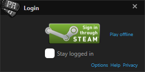
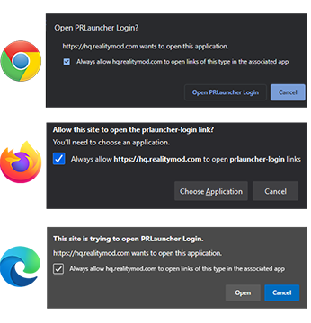
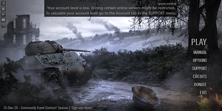
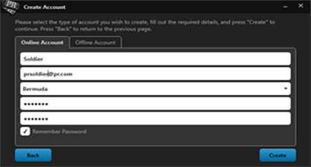
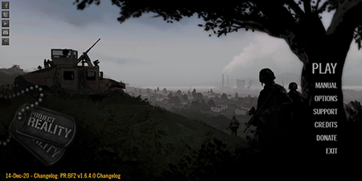
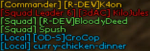
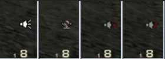

README
System Requirements
- Operating System: Windows 7, 8 or 10
- Processor: 2.4 Ghz Dual-Core minimum. 3.2 Ghz Recommended
- Memory: 3 GB RAM. 4 GB recommended
- Hard Disk: 10 GB free Hard Drive Space
- Graphics Adapter: Graphics Card with 128 MB RAM. 512 MB recommended.
- Sound: DirectX 9 compatible sound device. Dedicated sound card with EAX support recommended for best experience.
- Internet: 256 kbps or faster connection required for online play
- Software: .NET Framework 4
- Input: Mouse, Keyboard
- Optional: Joystick, Headset, microphone (strongly recommended for voice communication)
Spiel Installation
Mit PR: BF2 ist es nicht mehr erforderlich, dass Battlefield 2 installiert ist. PR: BF2 v1.3 und höher funktioniert als eigenständiges Spiel. Wenn Sie eine Version von PR: BF2 installiert haben, müssen Sie diese deinstallieren, bevor Sie PR: BF2 v1.6 installieren. Es gibt keinen Patch von und ältere Version zu v1.3 **!
Sie müssen den vollständigen PR: BF2 Installer von unserer Website herunterladen. Battlefield 2 muss nicht installiert sein.
Download Vollversion: BF2 v1.6 Installer
Der Installer-Download verwendet das Torrent Protocol, das mit freier Software wie qBittorrent verwendet werden kann. Der Download erfolgt in Form einer "ISO" - Datei. Die Installation hängt von Ihrem Betriebssystem ab:
- Windows 8 und darüber hinaus Feature-Mounting als Teil des Betriebssystems. Rechtsklicken Sie auf das ISO und wählen Sie Mount oder doppelklicken Sie auf das ISO. Dies startet das Installationsprogramm.
- Wenn Sie auf Windows 7 oder niedriger sind, besteht Ihre beste Option darin, die ISO-Datei mit kostenloser Software wie 7-Zip oder WinRar zu extrahieren .
Noch ein paar Punkte:
- Mit der neuen Standalone-Version ist es auch nicht mehr erforderlich, sie im Battlefield 2-Ordner zu installieren. Fühlen Sie sich frei, PR: BF2 in einem Laufwerk und Ordner Ihrer Wahl zu installieren.
- Wenn Sie BF2 installiert haben, können Sie es weiterhin spielen und andere BF2-Modifikationen abspielen. PR: BF2 stört sie nicht.
- PR: BF2 verfügt über einen automatischen Updater. Sobald Sie also PR: BF2 installiert haben, können Sie den Updater verwenden, um Ihr Spiel automatisch auf neuere Versionen zu aktualisieren, wenn diese veröffentlicht werden.
- PR: BF2 v1.3 und darüber hinaus enthält PR Mumble in seiner Installation. Es besteht also keine Notwendigkeit, dies separat herunterzuladen.
- Wenn Sie Torrents nicht verwenden möchten, finden Sie in unseren Foren Spiegel für direkte HTTP-Downloads.
Creating a PR Account
Since DICE and EA removed support for BF2 in May 2014 we now use our own account-service for PR:BF2. All your old BF2 accounts (before PR:BF2 v1.2) are no longer retrievable. Before using the PR Launcher you will need to create a PR Account in order to play online. This account is unique to you. Offline play does not require a PR Account. We use third-party services to connect and verify a PR Account with. Currently we only support Steam. You will need to have an existing Steam account or create a new one in order to link to your PR Account. When you launch Project Reality:BF2 for the first time you will shown the following window:

Press the Steam sign-in button to open a webpage where you will need to login to Steam in order to proceed. You will be then asked by your web browser to allow the PR Launcher to login. Depending on your browser this will look similar to the images below. Press the button that allows you to proceed. Afterwards you can close the webpage.

Your PR Account will be assigned a PR Account Level. This level determines how much your account is deemed legitimate and not a throwaway account. Servers have the option to choose which minimum level is required to play on their server. In order to determine your PR Account Level, your Steam account will need to be made partially public. You can do this in the Privacy Settings of Steam. Please make sure the game details settings are set to be public.

Your Steam profile does not have to be public while playing PR:BF2. Only when calculating the PR Account level. This is done once automatically on the first login and afterwards only when manually calculating. You can find our privacy-notice here. If your account level is not high enough to play on most online servers you will be shown a warning on the main PR Launcher screen which looks like the image below.

To recalculate your PR Account Level go to the SUPPORT menu and open the Account tab. There you can find your unique PR Account ID as well as your current PR Account Level and a button to calculate it again. Your level can never become lower after calculation. You will always keep the highest level you have.
Your PR Account Level will be higher by gathering XP for a few indicators. These are for example having no current Steam VAC bans, having games bought on the Steam store in your library and having playtime on said games. Donations to the Project Reality team do not influence your PR Account Level.
If you do not wish to create a PR Account to play online, you can choose to play offline only on the initial login screen.
Creating a Profile
You have one PR Account that is unique. However, you can create multiple profiles under this PR Account. Each profile has a unique in-game name as well as separate settings and controls saved on your computer. You can retrieve previously created profiles as well. Older profiles created after PR:BF2 v1.2 and before v1.6 can be retrieved as well by providing the profile name and password.
You can access the profile settings by hovering over the PLAY button in the PR Launcher and choosing Select Profile and then Manage Profiles. You have the option to create offline profiles as well. If you didn’t log in through your online PR Account, you can only make and use offline profiles.


Der PR-Launcher
Nach der Installation wird eine Verknüpfung für Project Reality: BF2 v1.6 auf dem Desktop bereitgestellt, doppelklicken Sie auf dieses Symbol, um den Launcher zu öffnen. Wenn der Launcher erscheint, werden Sie mit einem Spielerprofil-Setup begrüßt, hier können Sie entweder ein neues Konto erstellen, ein bereits vorhandenes PR-Spielerprofil abrufen oder importieren. Um Ihr Profil zu importieren, wählen Sie das gewünschte Profil aus der Liste und klicken Sie dann auf Importieren. Seit DICE und EA den Support für BF2 im Mai 2014 eingestellt haben, nutzen wir nun unseren eigenen Account-Service für PR: BF2. Alle Ihre alten BF2-Konten (vor PR: BF2 v1.2 ) sind nicht mehr abrufbar. Wir teilen unseren Account-Service mit der Forgotten Hope 2-Modifikation für BF2.
Wenn Sie neu bei BF2: PR sind und noch nie ein Profil erstellt haben, klicken Sie einfach auf "Create New Account" und geben Sie die erforderlichen Details ein und wählen Sie einen sinnvollen, leicht auszusprechenden Benutzernamen. Um auf PR-Multiplayer-Servern spielen zu können, müssen Sie ein Online-Profil erstellen. Sie können alternativ ein Offline-Profil erstellen, wenn Sie dies wünschen.

Nachdem Sie ein Profil erstellt und sich angemeldet haben, wird Ihnen das Hauptmenü des PR-Launcher angezeigt. Alle Optionen werden auf der rechten Seite angezeigt.
- Spielen: Damit wird das Spiel gestartet. Wenn Sie auf den Abwärtspfeil nach rechts klicken, können Sie nach Updates suchen oder ein anderes Profil auswählen. Wenn es ein Update gibt, wird es automatisch angezeigt, wenn Sie die Wiedergabetaste drücken. Dieses Update wird dann automatisch heruntergeladen und installiert. Der Fortschritt der Aktualisierung und Installation wird während des Betriebs angezeigt.
- Optionen: In diesem Menü können Sie Ihre Video-, Grafik- und Audioeinstellungen bearbeiten. Es sind auch einige andere Optionen sowie die Konfiguration von PR Mumble Keys verfügbar.
- Support: Dies ist praktisch, wenn Probleme auftreten. Es bietet viele Utilities wie das Löschen von zwischengespeicherten Ordnern oder die detaillierte Anzeige Ihrer Computerspezifikationen. Dies ist praktisch, wenn Sie unser Support-Team kontaktieren.
- Credits: Hier kannst du das gesamte PR: BF2-Team sehen, das viele Jahre an diesem Mod gearbeitet hat.
- Spenden: Ein direkter Link zu unserer Online-Spendenseite.
- Beenden: Verwenden Sie diese Schaltfläche, um den PR Launcher zu schließen und zu Windows zurückzukehren
_Das Hauptmenü des Launchers enthält auch einen Nachrichten-Ticker, der unten in blau hervorgehoben ist, mit Ankündigungen zu bevorstehenden Ereignissen, Entwicklungsfortschritten und Entwickler-Blogs der PR: BF2-Community.
Spielmenü Navigation
- Kooperativ: Erlaubt Ihnen, PR: BF2 mit computergesteuerten KI-Soldaten in den Teams zu spielen. Dieser Modus ist sehr nützlich, um die Spielmechanik und -ausrüstung kennenzulernen, bevor Sie an Online-Kämpfen teilnehmen.
- Bereitstellung: Der Hauptmodus in Project Reality. Hier finden Sie intensive Kämpfe mit bis zu 100 menschlichen Spielern.
- Kaserne: Dieses Menü gibt dir Zugang zu Replays mit Battlerecorder.
- Optionen: Hier können Sie die Audiooptionen sowie das Tastaturlayout konfigurieren. Video-Optionen müssen im PR Launcher geändert werden.
- Beenden: Verwenden Sie diese Schaltfläche, um das Spiel zu beenden und zu Windows zurückzukehren.
PR Mumble
Im Spiel ist Mumble das Programm, mit dem wir uns in PR miteinander kommunizieren: BF2, das das Voice-Over-IP-System (VOIP) von BF2-Vanille ersetzt. Die Haupteigenschaft von PR Mumble ist, dass seine primäre Kommunikationsmethode im 3D-Raum übertragen wird, der direktional und näherungsbasiert ist. Dies nennt man Lokal. Das bedeutet, dass alle Spieler in deinem Team miteinander sprechen können, wenn sie in der Nähe sind, und du kannst hören, in welche Richtung Du sprichst. Ähnlich kannst du beurteilen, wie weit weg sie sind, genau wie im richtigen Leben.
Nachdem du einem Trupp beigetreten bist, erhältst du Zugriff auf das Radio-Netz dieser Gruppe, das es dir ermöglicht, an andere Spieler in deinem Trupp zu senden, egal wo du dich auf der Karte befindest. Squad-Führer haben auch Zugang zu einem zusätzlichen Radio-Netz, das ihnen erlaubt, direkt mit dem Kommandanten, global zu allen anderen Gruppenführern und direkt zu einem einzelnen Gruppenführer zu kommunizieren. Wenn Sie ein Radio-Netz verwenden, wird beim Aktivieren und Deaktivieren des Radios ein Übertragungshinweis zu hören sein (der in den Audiooptionen des Startprogramms aktiviert werden kann). Die Standardschlüssel für die Übertragung über Mumble lauten wie folgt:
- Lokale Sprache (H ): Du sprichst mit Spielern im 3D-Radius um Sie herum.
- Squad Radio (Num 0 ): ** Du sprichst mit deinem Squad, egal wo du bist.
- Squad Leader zu allen anderen Squad Leaders Radio ( ): * Du sprichst gleichzeitig mit allen Squad Leaders. Dieses Funknetz steht dem Kommandanten auch zur Verfügung, um mit der gleichen Abkürzung zu arbeiten.
- Squad Leader zu einem bestimmten Squad Leader Radio (Num 1Num 9 ): Du sprichst mit einem bestimmten Squad Leader in deinem Team. Diese Kanäle im Netz stehen dem Kommandanten auch zur Verfügung, um sie mit der gleichen Abkürzung zu verwenden.
- Squad leader zu Commander Radio (/ ): ** Du sprichst privat mit dem Kommandanten.
PR Mumble wird zusammen mit PR: BF2 installiert. Es läuft neben der Installation des Spiels und erledigt automatisch alle clientseitigen Aufgaben, wie das Starten und Verbinden mit dem richtigen Mumble-Server. Die Spieler haben die Möglichkeit, ihre Kommunikationseinstellungen genau wie die vorherige Version zu ihrer Zufriedenheit zu konfigurieren. Dazu gehören Eingabe- und Ausgabegeräte, Volumes und die Tastaturkürzel. Die beiden wichtigsten Tasten sind die Voreinstellung: Lokaler Kanal (H ) und Squad Radio (0 auf dem Numpad ) Die wichtigsten Tastaturkürzel können im PR Launcher auch über das Optionsmenü unter der Registerkarte PR Mumble bearbeitet werden.
Es wird empfohlen, dass Sie das Haupteinstellungen-Bedienfeld direkt in der Mumble-Anwendung überprüfen, um sicherzustellen, dass alles korrekt eingerichtet ist. Suche dazu das PR-Symbol in der Taskleiste neben der Windows-Systemuhr (PR muss laufen), klicke auf auf das Symbol, um die Mumble-Oberfläche zu öffnen, und suche die Einstellungen oben. Danach erscheint das Einstellungsfenster und Du kannst Ihre Ein- und Ausgabegeräte konfigurieren und ändern

PR Mumble integriert sich auch in das HUD-Display von BF2. Während des Spiels sehen Sie die Namen der sprechenden Spieler, wobei jede Farbe darstellt, welchen Kanal sie übertragen, der in der unteren linken Ecke des Bildschirms angezeigt wird. In der unteren rechten Ecke zeigt mumble auch an, welchen Kanal Sie mit einer anderen Farbe senden, je nachdem, welchen Kanal Sie verwenden. Es zeigt auch an, ob Ihr Mikrofon oder Ihre Lautsprecher stummgeschaltet sind und ob es Probleme mit dem Mumble-Client gibt.


Übertragendes Mikrofon / Stummgeschaltete Lautsprecher / Stummgeschaltet / Getrennt
Troubleshooting
- PR: BF2 hat eine eigene Dateiprüfung, bevor Sie das Spiel starten. Sie können mit geänderten Dateien nicht online spielen. Sie können sie weiterhin offline verwenden.
- PR: BF2 muss mit dem PR Launcher gestartet werden. Das Starten von BF2.EXE oder PRBF2.EXE wird nicht funktionieren.
- Zusätzlich zum integrierten Server-Browser können Sie mit dem webbasierten PRSpy PR: BF2-Server durchsuchen und beitreten. PRSpy verfügt auch über eine Freundesliste, die das Finden von Freunden erleichtert.
Direkter Link zu PRSpy: http://www.realitymod.com/prspy/
- Es gibt auch eine Android-App mit dem gleichen Namen. Diese App ermöglicht es Ihnen, Serverinformationen, aktuelle Karten, Online-Player und eine Kartengalerie mit detaillierten Beschreibungen der Assets in jedem Layout zu sehen. Außerdem können Sie Benachrichtigungen aktivieren, die Sie informieren, wenn ein Server Ihre Lieblingskarte oder Ihren Lieblingsmodus spielt. Sie finden es hier.
- Wenn der Server, dem Sie beitreten möchten, voll ist, können Sie Auto Deploy verwenden. Wählen Sie den Server, klicken Sie auf "Server Info" und dann "AUTO DEPLOY". Ein Dialogfeld wird geöffnet, in dem die verbleibenden Schritte erläutert werden. Dann lehnen Sie sich einfach zurück und warten Sie darauf, verbunden zu werden, sobald sich ein Schlitz öffnet.
- Das Support-Menü im PR Launcher kann sehr nützlich sein. Es kann alle Systeminformationen Ihres Computers sammeln, damit Sie sie kopieren und in unsere Support-Foren einfügen können, wenn Sie Hilfe benötigen. Es kann Ihnen auch Ihren CD-Key Hash liefern.
Hier sind ein paar Forum-Links von realitymod.com, die aus verschiedenen Gründen verwendet werden können:
- PR: BF2 Bugs Unterforum, um Fehler zu melden.
- PR: BF2 Feedback Unterforum, um Ihr Feedback zu PR: BF2 zu schreiben.
- PR: BF2 Support Foren für alle Ihre Probleme in Bezug auf das Ausführen und Installieren des Spiels und Fehler, die Sie bekommen.
- Allgemeiner technischer Support für alle Ihre technischen Fragen.
- PR In-Game Taktiken und Strategien wird dir weiter helfen als dieses Handbuch, um alle Elemente von PR zu meistern: BF2 mit der Community schriftliche Anleitungen und Tutorials.
Default Game Controls
Allgemeine Kontrollen
| Feststelltaste / Home | Kit-Auswahl, Squad-Auswahl und Map-Menüs |
|---|---|
| Tab | Anzeigetafel anzeigen |
| Bildschirm drucken | Nimm Screenshot |
| M | Kartenüberlagerung ein- / ausblenden |
| N | Zoomstufe der Minikarte / wechseln |
| Q | Hauptradio-Rose anzeigen |
| T | Anzeige sekundäre Radio-Rose |
| Linke Alt | 3D-Markierungen ein- / ausblenden (nur innerhalb von 50m sichtbar) |
| C | BUIS umschalten / Kamera wechseln |
| Ende / Grab | Konsole |
Waffen
| G | Nimm einen Kit |
|---|---|
| Linke Maus | Feuer |
| Rechte Maustaste | Alt Feuer oder umschalten Ansicht |
| R | Neu laden |
| F | Waffenwechsel |
| 1-9 | Wähle Waffe |
Bewegung
| E | Fahrzeug einsteigen / verlassen |
|---|---|
| WSAD | Grundbewegung |
| Linke Strg | Hocke (halte ) |
| Z | umschalten liegen |
| Leerzeichen | Sprung |
| Linke Umschalttaste | Sprint / Fahrzeugboost |
Fahrzeuge
| F1-F8 | Fahrzeugposition wechseln |
|---|---|
| X | Vergrößerungsfaktor vergrößern / flackern |
| 6-9 | Kamerapositionen (Nur Hubschrauber und Flugzeuge ) |
| R | Neu laden |
| F | Waffenwechsel |
| 1-9 | Wähle Waffe |
Kommunikation
| J | Chat für alle Spieler |
|---|---|
| K | Chatte nur für dein Team |
| L | Chatte nur für deinen Squad |
| Seite nach oben | Anfrage annehmen |
| Seite nach unten | Anfrage ablehnen |
| B / H | PR Mumble Proximity Lokaler Kanal |
| V / 0 (Nummernblock ) | PR Mumble Squad Radio Kanal |
| 1-9 (Nummernblock ) | PR Mumble Einzelkader Leader Radio Channel |
| * (Nummernblock ) | PR Mumble alle Squad Leader Radio Channel |
| / (Nummernblock ) | PR Mumble Commander Radio Kanal |
Mumble Keys